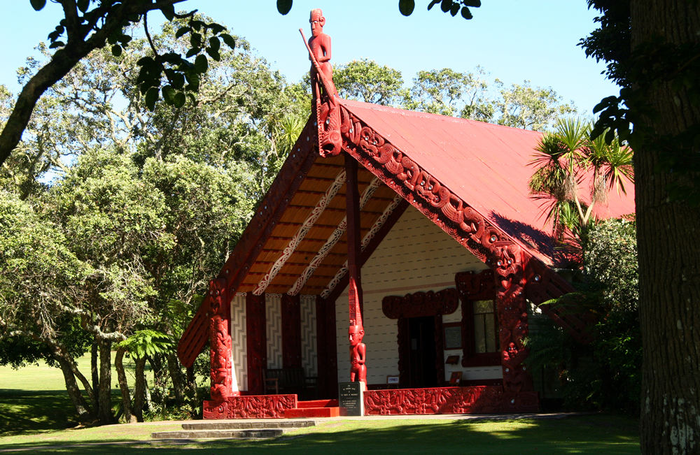
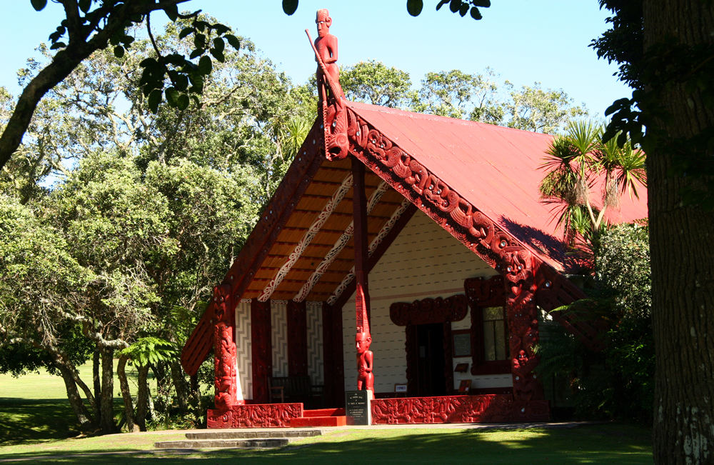

A Brief Introduction
The Treaty of Waitangi is New Zealand’s founding document. It takes its name from the place in the Bay of Islands where it was first signed, on 6 February 1840. This day is now a public holiday in New Zealand. The Treaty is an agreement, in Māori and English, that was made between the British Crown and about 540 Māori rangatira (chiefs).
Growing numbers of British migrants arrived in New Zealand in the late 1830s, and there were plans for extensive settlement. Around this time there were large-scale land transactions with Māori, unruly behaviour by some settlers and signs that the French were interested in annexing New Zealand. The British government was initially unwilling to act, but it eventually realised that annexing the country could protect Māori, regulate British subjects and secure commercial interests.
Lieutenant-Governor William Hobson had the task of securing British sovereignty over New Zealand. He relied on the advice and support of, among others, James Busby, the British Resident in New Zealand. The Treaty was prepared in just a few days. Missionary Henry Williams and his son Edward translated the English draft into Māori overnight on 4 February. About 500 Māori debated the document for a day and a night before it was signed on 6 February.
Hobson and others stressed the Treaty’s benefits while playing down the effects of British sovereignty on rangatiratanga (chiefly authority). Reassured that their status would be strengthened, many chiefs supported the agreement. About 40 chiefs, starting with Hōne Heke, signed the Māori version of the Treaty on 6 February. By September, another 500 had signed the copies of the document that were sent around the country. Some signed while remaining uncertain; others refused or had no chance to sign. Almost all signed the Māori text. The Colonial Office in England later declared that the Treaty applied to Māori tribes whose chiefs had not signed. British sovereignty over the country was proclaimed on 21 May 1840.
Source: https://nzhistory.govt.nz/politics/treaty/the-treaty-in-brief

 
